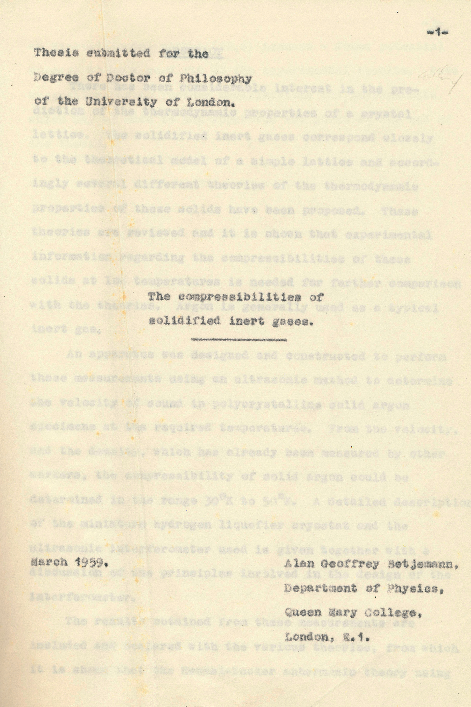

Typewritten PhD thesis by Alan. G. Betjemann to be converted to LaTeX written PDF.
The compressibilities of solidified inert gases. March 1959. Department of Physics. Queen Mary University of London.
For any enquires please contact - info@betjemann.com